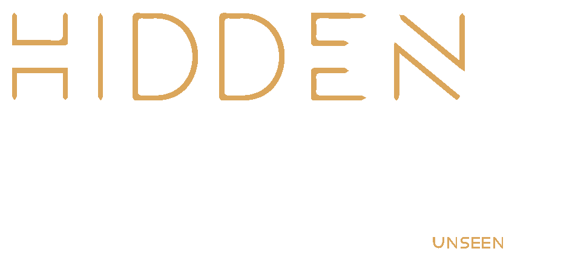

Project markers and the in-game panel
Step 2. Each project in Hidden Gems City gets a marker beside it. Walk up, press E or click it, and a panel opens inside the game. Everything here uses your Hidden Gems packet: near-black, gold hairlines, cream paper, the gem mark, the arch and the circuit line.
To mark up: press Annotate (bottom left) and click any option. Tell me which you like, and what to change. Mixing is fine.
A · The marker beside each project
Shown beside a person for size, with eye level dashed.
eye level

Net Zero SchoolPress E1 · Gold-framed plate
The business card as an object: black plate, double gold hairline, gem mark. Small and quiet; reads as a museum label.
eye level
Net Zero SchoolN° 07
2 · Letterhead stele
The cream stationery as a standing slab, with the circuit line and nodes down its edge. Easiest to spot against a dark or busy street.
3 · Arch window
The arched frame from your posters, with a picture of the project inside and the name stacked vertically. The most visible from far away.
B · The prompt when you are near
Net Zero School · press E to look closer
C · The panel, option 1: side file
Opens on the right and the city stays visible and walkable behind it. Tabs let you read the story and see drawings without leaving the game.
×
Hidden Gems · project file N° 07
Net Zero School
OverviewStoryDrawings
- Year
- [Add year]
- Place
- [Add location]
- Type
- K–12 school
- Size
- [Add size]
- Role
- [Add your role]
[Two or three sentences on the idea behind the project. Placeholder until you write it.]
Open the 3D modelRead the storyDrawings and renders
E or Esc closes · the 3D model opens the project's own page
C · The panel, option 2: bottom card
More game-like: a strip along the bottom with the project in an arch, facts in a row and the buttons on the right. Keeps more of the view clear.
×
Hidden Gems · project file N° 07
Net Zero School
Year[Add]Place[Add]TypeK–12 schoolSize[Add]Role[Add] Open the 3D modelRead the storyDrawings and renders
Questions for this step
- Marker: which of the three, and should every project use the same one or should the kind of marker vary with the project?
- Panel: side file or bottom card?
- Gold or pink: your site uses pink as its accent and Hidden Gems uses gold. Inside the city, should gold replace pink completely, or should pink stay for "New" and for the thing you have selected?
- Name: the brand reads "Hidden Gems" (plural). Should the city be "Hidden Gems City" or "Hidden Gems City"?
- Numbers: I numbered projects like files (N° 07). Should the numbers follow the tour order, the year, or be dropped?